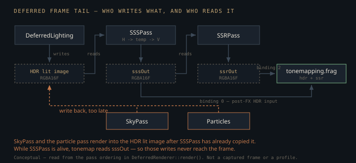

Monograph · Tree · ← Module hub · SSR & SSS
deferred
SSR & SSS
Experimental reflections and subsurface blur.
Two effects, one bet
`SSRPass` and `SSSPass` make the same wager: everything they need is already in the frame. Each reads one HDR colour image plus three GBuffer attachments and nothing else — no acceleration structure, no second geometry submission — as 16×16 compute dispatches over a fixed 1920×1080 grid writing `R16G16B16A16_SFLOAT`. But they are chained, not parallel. SSS consumes the deferred lighting output; the local `litOutput` is then reassigned to SSS's blurred image, and *that* is what SSR is handed as its `litScene`:
m_ssrPass->setLitSceneView(litOutput);ohao/render/deferred/deferred_renderer.cpp:540So on the default path — `SSSPass` is only reset if it fails to initialise — every screen-space reflection returns post-SSS radiance, and reflected skin is blurred twice. Both passes are created unconditionally by `DeferredRenderer` and run on every deferred frame: no quality flag, no scene-content test, and neither appears in the pass list `getPipelineInfo()` reports. What differs is how far each pushes the bet, and how each is wired into the tail of the frame — which is where the sharp edges are.
The reflection ray marches in world space
The shipping SSR is a linear world-space march, not a screen-space one. `maxDistance` is 20 world units and the loop is a fixed 64 iterations, so every step advances the ray by exactly 0.3125 units regardless of where the pixel is or which way the reflection points:
m_params.maxDistance = 20.0f;ohao/render/deferred/ssr_pass.cpp:29vec3 samplePos = rayStart + reflDir * (stepSize * float(i + 1));shaders/postprocess/ssr.comp:66Each sample is then pushed through `viewProj` and divided by w to get a UV. Marching in world space and projecting per step is the cheap way to write SSR, and it costs uniform screen coverage: a reflection heading into the screen resamples one texel dozens of times, while a ray skimming along the view plane can jump many pixels per step and walk straight over a thin occluder. A screen-space DDA has the opposite, better behaviour — one step, one pixel.
The hit test asks whether the ray's post-projection depth has just crossed the stored depth by less than `thickness`:
if (rayDepth > sceneDepth && rayDepth < sceneDepth + thickness) {shaders/postprocess/ssr.comp:86Both sides of that comparison are non-linear device depth. The comment immediately above it says otherwise:
// Linearize both depths for comparisonshaders/postprocess/ssr.comp:83No linearisation happens. The comparison is still self-consistent — `ndc.z` and the `D32_SFLOAT` GBuffer depth live in the same space — but the threshold is 0.05 *of the projected depth range*, not 5 cm:
m_params.thickness = 0.05f;ohao/render/deferred/ssr_pass.cpp:30Perspective depth compresses distance, so the accepted slab is razor-thin near the camera and widens sharply further out: far-field rays are accepted well behind the real surface while near-field contacts are rejected. Anyone "fixing" this by linearising both sides must retune `thickness` into world units at the same time, or SSR goes dark.
A second, smaller mismatch sits in the same comparison. The GBuffer — depth attachment included — is rasterised through a TAA-jittered projection:
jitteredProj[2][0] += jitter.x;ohao/render/deferred/deferred_renderer.cpp:292while `SSRPass` is handed the clean, unjittered matrix:
m_ssrPass->setCameraData(m_proj * m_view, m_cameraPos);ohao/render/deferred/deferred_renderer.cpp:539so every `sampleUV` the march computes is offset from the depth buffer it reads by that frame's sub-pixel jitter, in a different direction each frame. `m_taaEnabled` defaults to false, which makes the offset exactly zero; the `model_viewer` example enables TAA in deferred mode, and there the offset is always present.
Two thresholds decide which pixels get a ray at all. Rough dielectrics are skipped, metals always traced:
if (roughness > 0.7 && metallic < 0.5) {shaders/postprocess/ssr.comp:48and sky is detected by exact float equality against the GBuffer clear value:
if (worldPos == vec3(0.0) && metallic == 0.0) {shaders/postprocess/ssr.comp:37That works only because attachment 0 is cleared to exactly zero and untouched pixels keep it bit-for-bit — and it also classifies a real dielectric sitting on the world origin as sky.
clearValues[0].color = {{0.0f, 0.0f, 0.0f, 0.0f}}; // Position (rgb) + Metallic (a)ohao/render/deferred/gbuffer_pass.cpp:156The Hi-Z tracer that did not ship
A second, considerably more serious SSR exists in the tree — McGuire–Mara screen-space ray tracing: descend a hierarchical depth pyramid, step coarse where the ray is clear, refine on a suspected hit, binary-search the crossing, with roughness and edge fades.
// Screen-Space Reflections using hierarchical ray marchingshaders/_disabled/ssr.comp:4It lives under `shaders/_disabled/`. The CMake glob is recursive, so it still compiles to `_disabled_ssr.comp.spv` on every build — but no C++ loads that module. `SSRPass` loads the linear one:
VkShaderModule shader = loadShaderModule("postprocess_ssr.comp.spv");ohao/render/deferred/ssr_pass.cpp:122The Hi-Z tracer needs a depth mip pyramid nothing in the deferred pipeline builds — `shaders/compute/hiz_generate.comp` exists but has no caller. The 64-step linear march was kept because it needs only the GBuffer that already exists. The price is exactly the artefact class above: distance-dependent thickness and non-uniform screen sampling. Reviving the Hi-Z path is a pyramid-generation problem, not a shader problem.
Composite: a dead alpha channel, and one dangerous default
SSR writes `hitColor * fresnel * hitAlpha` into RGB and `hitAlpha` into alpha, so RGB is pre-multiplied by the coverage stored beside it. The tonemap samples all four channels and then uses three:
hdrColor += ssr.rgb;shaders/postprocess/tonemapping.frag:95`ssrInput` occurs exactly twice in the tree — its binding declaration and this `texture()` call — so `ssr.a` is written every frame and read by nothing. Pre-multiplied RGB plus a coverage alpha is the input to an OVER composite, `hdr * (1 - a) + ssr.rgb`; a bare `+=` leaves the surface's own specular from the lighting pass at full strength and stacks the reflection on top instead of trading one for the other in proportion to `hitAlpha`. The overshoot is bounded — `hitAlpha` is capped at 0.8 and faded by march distance and roughness — but it is an error, and the channel that would correct it is already being produced.
The second hazard is the fallback: with no SSR view bound, binding 2 is filled with the HDR input itself.
imageInfos[2].imageView = m_ssrView != VK_NULL_HANDLE ? m_ssrView : m_hdrInputView;ohao/render/deferred/post_processing_pipeline.cpp:303The comment there calls that "zero reflections", but under an additive composite it is a doubled exposure of the whole frame. If `SSRPass` ever fails to initialise, the frame gets twice as bright rather than losing reflections.
Skin with no material flag
`SSSPass` has no skin bit to read. The GBuffer carries position+metallic, octahedral normal + roughness + emissive, and albedo+AO — no material class — so the blur infers skin from albedo chromaticity: non-metal, enough red, red at least as strong as green, not blue-dominant.
step(albedo.g, albedo.r) * // red > green (warm tone)shaders/postprocess/sss_blur.comp:46The product of those four terms is `skinFactor`, used both as the early-out and as the final `mix` weight — but it is not continuous. `step(albedo.g, albedo.r)` is a hard 0/1 switch at `albedo.r == albedo.g`, so the weight jumps from zero to the full smoothstep product the instant red edges past green. A second hard cut follows immediately:
if (skinFactor < 0.01) {shaders/postprocess/sss_blur.comp:68Only the two `smoothstep` terms fade. Wherever an albedo texture crosses r = g — a desaturated patch, a filtered texel between a warm and a neutral one — the blur switches on along a contour instead of ramping across it. The test also fires on terracotta, rust and red cloth, and misses dark skin whose albedo red falls below the `smoothstep(0.1, 0.35)` toe. The function's own comment claims parity with the lighting shader:
// Detect skin material (same heuristic as lighting shader)shaders/postprocess/sss_blur.comp:41No counterpart exists in `deferred_lighting.frag` today; that comment is stale.
The kernel, and the sigma hidden in a magic 100
The blur is separable in the Jimenez sense: a horizontal pass into a temp image, then a vertical pass into the output, driving the same pipeline with a different `direction` push constant.
executePass(cmd, m_litSceneView, VK_NULL_HANDLE, m_tempView, m_temp, glm::vec2(1, 0));ohao/render/deferred/sss_pass.cpp:226Seven taps at offsets −3…+3 are scaled by `sssWidth`, fixed at 8 pixels, so the kernel reaches ±24 pixels of the pass's 1920×1080 grid. Fixed, not defaulted: `SSSPass::setSSSWidth` exists and has no caller anywhere in the tree, so the member initialiser is the only width the shipped pipeline can ever run.
float m_sssWidth{8.0f};ohao/render/deferred/sss_pass.hpp:38Weights are per-channel, encoding the fact that red scatters furthest through dermis: the centre tap keeps 90.6% of blue but only 54.4% of red, and each channel's seven weights sum to exactly 1.
vec3(0.544, 0.786, 0.906), // center sample — most weightshaders/postprocess/sss_blur.comp:35Each tap is then gated by a Gaussian in depth difference — the term meant to stop the blur bleeding across a silhouette:
float depthWeight = exp(-depthDiff * depthDiff * 100.0);shaders/postprocess/sss_blur.comp:92Written as a normal distribution, the literal 100 fixes a falloff length:
$\Delta r$ is the difference in the depth proxy between the centre tap and a neighbour, and $\sigma$ is the separation at which that neighbour's weight has fallen to $e^{-1/2} \approx 0.61$ — still most of its kernel weight, so $\sigma$ is not a cutoff. The gate is much softer than the number suggests: the weight reaches 0.1 only at $\Delta r \approx 0.15$ and 0.01 at $\Delta r \approx 0.21$. In a scene authored in metres the hard-coded 100 therefore means "attenuate gently out to ~15 cm, reject beyond ~21 cm". That is the one place the pass silently assumes a world scale, and the scale it assumes is generous.
The subtlety is what the proxy is. It is not view depth; it is the length of the GBuffer world position, i.e. distance from the *world origin*:
float centerDepth = length(posSample.rgb);shaders/postprocess/sss_blur.comp:74There is no camera term in that line at all, so the iso-surfaces of the proxy are spheres centred on the world origin and they do not move when the camera does. Two surfaces on opposite sides of the origin at the same radius have $\Delta r = 0$ and blur into each other wherever they land on screen. The degenerate case is the one skin actually gets: put a head at the origin and every point on it sits at nearly the same radius — nose tip and back of the skull alike — so $\Delta r \approx 0$ over the whole surface and the gate does nothing whatsoever. Move the character far away and the shells flatten into locally planar sheets, which is *better* geometry, just planes oriented by the origin rather than by the view. Either way, a depth-aware weight that ignores the camera cannot track a silhouette, which is the only thing this term exists to protect.
What the blur actually blurs
Jimenez's separable SSS blurs *diffuse irradiance* and adds specular back afterwards, because a blurred highlight is exactly the wrong look for skin. This pass binds the composited lighting output — diffuse, specular, emissive and IBL together:
layout(set = 0, binding = 0) uniform sampler2D litScene; // HDR lightingshaders/postprocess/sss_blur.comp:10so specular is softened along with everything else, at the one fixed width. Closing that gap is not a kernel change: it needs the lighting pass to emit diffuse and specular separately.
Ordering hazards nobody declared
The render graph tracks barriers for CSM → GBuffer → SSAO → Lighting. SSS and SSR run *after* `m_renderGraph.execute(cmd)` on the raw command buffer with hand-written `vkCmdPipelineBarrier` calls, so their transitions are invisible to the graph. SSS then rebinds the frame's current HDR view for everything downstream:
litOutput = m_sssPass->getOutputView(); // downstream uses blurred outputohao/render/deferred/deferred_renderer.cpp:532and post-processing prefers the SSS output whenever the pass exists:
VkImageView hdrView = (m_sssPass && m_sssPass->getOutputView()) ?ohao/render/deferred/deferred_renderer.cpp:620But two passes still write into the *original* lighting image after SSS has sampled it — the Preetham sky (enabled by default) and the particle forward pass:
// 4.6. Sky pass — fills sky pixels with Preetham skyohao/render/deferred/deferred_renderer.cpp:548
A second gap sits in the same area. `DeferredRenderer::onResize` forwards to the GBuffer, RT GI, lighting, post-processing, gizmo and sky passes — and not to SSS or SSR:
void DeferredRenderer::onResize(uint32_t width, uint32_t height) {ohao/render/deferred/deferred_renderer.cpp:657Both passes implement a correct `onResize`; nobody calls it. Their images stay at the 1920×1080 allocated at init, and `screenSize` in the push constants comes from the same stale `m_width`/`m_height`, so after a window resize they produce a correctly scaled 1080p result that post-processing samples with the new viewport's UVs.
Neither pass has an enable switch and neither is registered with the render graph. They are always on, always hand-barriered, and permanently 1920×1080 — full-resolution only until the window is first resized. Any change to the order of the block between `m_renderGraph.execute()` and post-processing changes what ends up in the frame.
Contracts
- SSR's `thickness` is in projected depth units, not world units. Linearising the depth comparison without retuning it disables all reflections.
- SSR's sky test is exact equality with the GBuffer clear colour. Changing `clearValues[0]` to anything non-zero makes SSR trace rays for the sky.
- The tonemap's SSR fallback binds the HDR input under an additive composite: a missing SSR view doubles scene brightness rather than contributing nothing.
- `SSSPass` must run after everything that writes the lighting HDR image, because post-processing switches its input to the SSS output. Passes writing to the lighting image later — currently SkyPass and particles — do not reach the frame.
- `DeferredRenderer::cleanup()` releases the particle system, sky, gizmo, post-processing, lighting, CSM and GBuffer passes and nothing else. `m_sssPass`, `m_ssrPass`, `m_rtShadow` and `m_rtGI` survive it and are freed only when `~DeferredRenderer` destroys their `unique_ptr`s. Calling `cleanup()` manually and then destroying the `VkDevice` destroys all four against a dead device.
- The tonemap ignores SSR's alpha channel. Anyone switching the `+=` to a correct OVER composite gets the coverage for free from `ssr.a`; anyone deleting the alpha write first makes that fix impossible.
Source files
ohao/render/deferred/deferred_renderer.cppohao/render/deferred/ssr_pass.cppshaders/postprocess/ssr.compohao/render/deferred/gbuffer_pass.cppshaders/_disabled/ssr.compshaders/postprocess/tonemapping.fragohao/render/deferred/post_processing_pipeline.cppshaders/postprocess/sss_blur.compohao/render/deferred/sss_pass.cppohao/render/deferred/sss_pass.hppohao/render/deferred/ssr_pass.hppParent hub for the full pipeline narrative; this page is the file-level design unit. Sitemap · hover glossary terms anywhere.